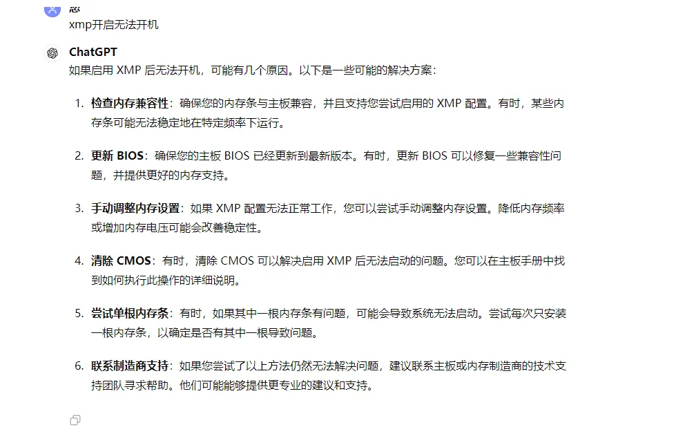

| 类别 | 型号 | 价格 |
|---|---|---|
| cpu | 13600kf | 2599 |
| 主板 | 微星 MAG B760M WIFI II d5 | |
| 散热 | 利民 PA120 SE | 152 |
| 内存 | 金百达 刃黑甲 6400/c32 a-die | 734 |
| 硬盘 | 西部数据 850X | 579 |
| 显卡 | 1080 七彩虹(二手) | 885 |
| 电源 | 振华 leadex HG 750w | 639 |
| 机箱 | s960 暴风雪 x 全景版(黑) | 172 |
| 显示器 | f24g30f | 579 |
| 维修被坑 | 200 | |
| 总计 | 6539 |
额外
插入 u 盘可连接无线网络？ u 盘还有这个功能
调 u，调内存可能导致开机变慢？
要读 bios 配置，而不是采用默认，就会变慢
机箱越大，能承载的热量就越多，就可以耐打一些
安装系统
采用 ntfs 格式的 u 盘
去微软官网下载非家庭版的 win11 安装包
bios 设置
vmd 功能
setting 里面有恢复默认操作
个人电脑
电脑不怕用，就怕空着
主板会亮灯自检一下，闪一下说明自检过了，如果常亮说明自检没通过
cpu 和主板体质会影响电脑是否能够超频
xmp 后开不了机可以把 dream 电压稍微调高一些
dp 固件升级来应对，使用 dp 线打不开 bios 和升级 bios 使用的 m-flash 问题
有一根显卡线接的不对
金百达和微星主板似乎不兼容 xmp 还没有打开
微星的主板电源故障的时候也会显示显卡自检灯未通过
xmp
1 电压供电
2.bios 更新
3.插一根内存条测试
bios 更新
dp 线可能会黑
扣电池
bios 更新到最新 学习 bios 配置 内存频率 xmp
开鲁大师说丢失文件
鼠标/键盘
更新 bios
更新 BIOS 可以帮助解决硬件兼容性问题，提高系统稳定性，并增加一些新功能。以下是一般情况下更新 BIOS 的步骤：
- 确定您的主板型号和当前 BIOS 版本：您可以在主板上或者在主板手册中找到主板型号。通常，启动计算机时 BIOS 屏幕的底部会显示当前 BIOS 版本。确保您确切地了解您的主板型号和当前 BIOS 版本。
- 下载新的 BIOS 版本：前往主板制造商的官方网站，在支持页面中找到您的主板型号，并下载最新的 BIOS 版本。请务必选择正确的型号和操作系统版本。下载后，解压缩文件。
- 备份重要数据：虽然更新 BIOS 通常是安全的，但出于安全考虑，最好在开始之前备份计算机上的重要数据。
- 制作启动介质：有些主板制造商提供了在操作系统之外更新 BIOS 的工具，通常是一个可启动的 USB 驱动器或光盘。按照制造商提供的说明制作启动介质。
- 进入 BIOS：重启计算机，并在启动时按下相应的键（通常是 DEL、F2、F10 或者 F12）进入 BIOS 设置。
- 进行 BIOS 更新：在 BIOS 设置界面中，找到“BIOS Update”、“Flash BIOS”或类似的选项。选择这个选项，并选择您下载的新 BIOS 文件。
- 执行 BIOS 更新：按照屏幕上的提示，执行 BIOS 更新。这可能需要一段时间，而且在更新期间计算机可能会自动重新启动。请确保不要在更新过程中关闭计算机或中断电源。
- 验证更新：更新完成后，重新进入 BIOS 设置，并确保新版本的 BIOS 已经成功安装。通常，新 BIOS 版本号会显示在 BIOS 设置界面的底部。
开启 XMP 后无法开机
开启 XMP 后无法开机可能是以下原因：
1. 内存条不兼容。建议更换内存条。
2. 电脑电源功率不足。建议检查电源是否能够满足电脑运行的需求。
3. 主板不支持 XMP。部分主板可能不支持 XMP，可以尝试关闭 XMP 看是否可以开机。
4. BIOS 设置问题。可以进入 BIOS 设置，查看是否存在与内存相关的设置选项，并尝试进行相应的调整。针对您提供的主板、CPU 和内存信息，您可以尝试以下方法解决问题：
1. 重新插拔内存条。将内存条拔下后，用橡皮擦擦拭金手指，再重新插紧。
2. 检查电源是否能够满足电脑运行的需求，可以尝试更换电源看是否能够解决问题。
3. 进入 BIOS 设置，查看是否存在与内存相关的设置选项，并尝试进行相应的调整。例如，可以尝试将内存电压调整到 1.35v 或者 1.40v，保存退出后看是否能够解决问题。
4. 如果以上方法都无法解决问题，建议联系电脑售后或者将电脑送至维修中心进行检查和维修。

XMP
XMP（eXtreme Memory Profile）是一种能够提高内存频率以获得更高性能的功能。在许多情况下，启用 XMP 可以显著提升系统的整体性能，特别是在需要处理大量数据或运行需要大量内存的应用程序时。
以下是启用 XMP 可能带来的一些好处：
- 提高内存频率：XMP 允许内存模块以超出默认频率的速度运行。这意味着您的系统可以更快地读取和写入数据，从而提高了整体性能。
- 改善系统响应速度：高频率的内存可以加速数据传输速度，从而改善系统响应速度和任务执行效率。
- 增强游戏性能：对于需要大量内存和快速数据传输的游戏，启用 XMP 可能会提高帧率和游戏运行的流畅度。
- 加速多任务处理：启用 XMP 可以改善系统处理多任务时的效率，特别是在同时运行多个内存密集型应用程序时。
尽管 XMP 通常会带来性能提升，但需要注意的是：
- 稳定性问题：在一些情况下，启用 XMP 可能会导致系统不稳定或出现崩溃。这可能是因为超频导致内存不稳定，或者是因为内存控制器无法适应高频率。
- 过热问题：高频率的内存可能会产生更多的热量。如果系统冷却不足，可能会导致过热问题，甚至影响硬件寿命。
- 兼容性问题：某些主板和内存组合可能不支持特定的 XMP 配置。在启用 XMP 之前，请确保您的硬件兼容，并且已经更新到最新的 BIOS 版本。
因此，在启用 XMP 之前，请确保您了解潜在的风险，并做好备份以应对可能的稳定性问题。
出了问题找谁
找教程
找咸鱼
找客服
学习的地方
小红书
抖音
朋友
b 站
被骗经历
多搞几次 主板不行了？
你自己不能搞？
我后面还有单子？
首先第一点 我想网上找个人来给我看一下电脑，我一搜网上看了一下 42 元，我觉得价格合适，那我就联系客服，买了一张券
现在你人来了，修完了，跟我说要 30 上门费，这个上门费我之前是不知道的，你说了以后我从在平台上看见这个价格，也没人跟我说等于一次上门检查需要 30+42 至于你说的你过来要 10 公里，那我觉得送个外卖几公里又需要多少钱呢 我打车 10 公里又需要多少呢
最后你排查了一遍，我也不知道啥情况，你就拿出工具在修，据我所知你做的操作就是拿个工具进行 comos 放电重置的操作，你说要收 188，而且还是弄完了给我说要这个价格，这一点我也觉得非常不合理，等于说这一次的上门维修需要 42+30+188，而且除了 42 其他费用都是在我不知情的情况下产生的，而且你的一切操作也没有产生任何的耗材。如果你说 42 只是检查费而不是维修的话就应该在修之前把事情说清楚，而不是弄完了才说要收费。而且当时师傅说如果你觉得不行，那我就把他弄回去，我觉得自己受到了威胁，如果主板本身有问题我可以找卖主板的，如果你的操作导致人为问题，那我可以找你。凭什么说我不给这个钱，你要说弄回去，还可能导致主板故障，我现在觉得一切都不合理。有种被骗了钱的感觉。
装机注意事项
保护膜一定要撕掉 硬盘的和 CPU 风扇的
螺丝不要一颗拧到底 交叉起来
硬盘这边有个卡扣
要买螺丝刀
观看视频硬件茶谈
散热器要撕膜
硬盘要撕膜
开箱拍视频留证据
看说明书
主板螺丝稍有阻力就停止
cpu 缺口要对齐
放入 cpu 以后先把 cpu 左边的固定架按下去
散热撕掉双面胶 扣上 蓝色四颗柱子卡住
横着放两片 螺丝卡住 硅脂
字母在右边
把主板放在盒子上的包装袋上
硬盘螺丝柱一定要在指定位置，而且螺丝柱可以旋转扣上
硬盘螺丝也是点到为止
拧 cpu 散热的螺丝时候一定要两边均匀受力
散热架子的螺丝也是拧到点到即止
扇叶面对着内存侧 马达面对着 io 侧
插显卡 插内存一定要打开卡扣
插进去的时候一定要注意看凹口
确定机箱托盘的螺丝柱和主板的螺丝孔是否一一对应
如果缺了要补 用老虎钳拧紧
拧主板螺丝的时候拧到拧不动有阻力就可以了
电源上面有开关的 要打开
电源与机箱贴底
电源 psu 接电源端口
上下摇晃安装
左正右负
显示器先打开
注意指示灯
显示器接口对不对
选购场所
淘宝
抖音
拼多多
京东
抖音直播 diy 主播
各部件重要参数
内存：时序 颗粒 频率 大小
cpu 的大小核心
部件介绍
一、处理器 CPU

1，目前市面上主要有 Intel 和 AMD 两个品牌，Intel 占据了市场的绝大部分，AMD 靠一些高性价比的产品占领了剩余不多的市场。如果你图省心稳定，你可以只考虑 Intel 的处理器。如果你有一定的折腾能力，希望花更少的钱买到性价比更高的产品，那 AMD 的 R5，R7 系列产品是不错的选择。
2，处理器名称后面通常在还会跟有一个类似 3.50Ghz 的参数，代表的是处理器的主频，通常情况下主频越高性能就越好，但不是判断好坏的唯一标准。
3，Intel 处理器中的赛扬、凌动家族产品过于老旧，已被市场淘汰，不建议购买，奔腾家族产品在低端处理器中还占有一定的市场。至强家族定位是服务器处理器，特点是多核多线程，大缓存，低主频，一般用作商用服务器和建模渲染。而酷睿家族产品是专为家用处理器而生。如果说至强处理器是货车的话，那酷睿处理器就是家用轿车。
4，处理器分为台式 CPU 和笔记本 CPU，受技术限制，一般来说台式 CPU 的性能要远高于笔记本 CPU，笔记本 CPU 产品名称后面会跟有 M 这样的后缀，后缀 K 表示可以超频，台式 CPU 的低功耗版本意义不大，笔记本 CPU 的 U 和 Y 后缀用于超极本等轻薄的笔记本，为的是提升续航能力进行了性能缩水，有两个字母后缀的是后缀的组合，比如 M 是移动版，X 是至尊版，那么 XM 就是移动至尊版了。
5，处理器一般会以盒装 CPU 和散装 CPU这两种形式出售，散装和盒装 CPU 并没有本质的区别，在质量上也不存在优劣的问题。盒装 CPU 是行货，自带散热器并官保三年，散装 CPU 是水货或者旧货，没有散热器，需要额外购买散热器，散装 CPU 在价格上也要比盒装 CPU 便宜不少。事实上，CPU 没有正品和山寨的区别，因为 CPU 这种技术密集型产品是没办法山寨的。CPU 经久耐用，损坏的情况极少，全新的和二手也不会有什么差别。
6，通过观察 CPU 的名称我们就能知道 CPU 性能的大概，但要想知道具体怎么样的话，可以用鼎鼎大名的 CPU 测试软件 CPUZ 来查看，也可以到跑分网站 CPUBOSS 来比较查询，还可以通过喜闻乐闻的「天梯图」 来比较，在线查询比如 驱动之家 和 超能网 推出的天梯图
二、内存 RAM

1，内存全称是随机存取存储器，英文叫 RAM，全称为 Random Access Memory，内存是 CPU 能直接读取和写入数据的地方，是数据的中转站。内存计算速度极快，一个程序运行时，电脑会把这个程序运行所需要的数据全部放到内存里去。就好比我们吃饭时，不是直接拿着电饭锅吃而是用碗装着吃一样。
2，内存的好坏也决定了电脑运行的质量。内存主要分为 DDR3 和 DDR4 两种，理论上内存频率越高，传输速度也就越快，但 DDR4 也需要相应的硬件支持。影响内存最重要的还是内存的总容量大小。使用大容量内存可以让电脑运行更加畅，比如你可以同时开启多个程序而不会觉得卡顿，程序之间的切换速度也更快，也不用为了节省内存而关闭这个效果，优化那个设置。
3，32 位系统的最大内存使用量为 3.9GB，即使你装了 16GB 的内存，能够用得上的内存也只有 3.9GB 而已，推荐使用 64 位操作系统。
三 、硬盘 Disk

1，硬盘是电脑数据的存储器，储存着电脑中的所有文件，包括电脑系统本身。市面上主要有机械硬盘 (HDD) 和固态硬盘 (SSD) 两种硬盘，在不特指的情况下，我们常说的硬盘指的就是机械硬盘。简单地说，机械硬盘存储数据用的是磁碟，固态硬盘存储数据用的是芯片。固态硬盘有着机械硬盘无可比拟的读写速度，但机械硬盘具有文件误删可恢复的特性。
2，因为机械硬盘使用的是碟片高速转动来回寻道读写数据的原理，所以机械硬盘使用时间长了之后会出现不同程度的磨损，导致出现物理坏道，而物理坏道是不可修复的。出现物理坏道通常会有一些“征兆”，比如有时电脑特别的卡，鼠标移动像幻灯片一样，有时还会莫名其妙的蓝屏死机。
根据我的个人经验，一般 5 年左右就需要更换新的机械硬盘了。应对机械硬盘损伤，我们需要避免高强度震动，特别是在电脑运行中的时候，避免频繁跳电，直接拔电源强行关机，也不要使用关机键强行关机，应该使用系统的关机按钮，同时不要高强度长时间的使用电脑。
3，我们会有这样的感觉，就是在复制文件的时候速度很慢，但如果要是删除文件的话速度就非常快，其原因并不是文件真正地被删除，而只是被标记为删除。被删除文件所处的位置在没有被其他文件覆盖前，是可以通过数据恢复软件找回的，数据恢复公司使用的也是同样的方法。当我们在误删文件后，应该立即停止操作，防止文件占用位置被覆盖的可能，覆盖了就再也找不回来了。

4，固态硬盘采用闪存颗粒芯片，没有机械传动机构，相比机械硬盘有更加轻薄的机身和更好的抗震力，所以固态硬盘的寿命非常长，根本用不着当心寿命的问题，通常都是电脑比固态硬盘先退役，而且现在电子技术发展技术这么快，5 年以上的电子产品基本都要淘汰了。
比起固态硬盘的寿命问题，你更应该关心的是不要高强度长时间使用和突然断电。如果高强度长时间工作而散热不到位就会导致固态硬盘过热而加速老化。突然断电可能会导致数据丢失，包括已保存的数据，固态硬盘是不能像机械硬盘那样能找得回来的。
5，当然，不同的固态硬盘之间性能还是有差别的。速度最快、寿命最长的 SLC 闪存颗粒价格也最贵，速度较快、寿命较长的 MLC 闪存颗粒价格也较贵，速度较慢、寿命较短的 TLC 闪存颗粒价格也最低。固态硬盘查询软件推荐使用 AS SSD Benchmark。对比两块固态硬盘的差距可以到网站 SSDBOSS 上查询，也可以使用 百度显卡吧 制作的固态硬盘天梯图来对比。
6，事实上，我们使用电脑的本质就是不断读写电脑里各种文件的过程，硬盘数据读写的快慢影响着电脑操作的流畅程度。我们常说电脑开机慢，打开软件时间特别久，不是因为电脑的配置不好，而是硬盘的读写速度跟不上，使用固态硬盘对于使用电脑的流畅程度有着极大的提升。比较通行的做法是采用SSD+HDD 的混合方案，SSD 用于系统和软件的存储，HDD 用于资料的存储。
7，不管机械硬盘还是固态硬盘，我都只推荐选购一线品牌，而且要买全新的，同时只在推荐在官方或官方授权店购买，贵的那部分钱的换来的是电脑数据的安全稳定。
四、显卡 GPU

1，显卡也是电脑的重要组成部分，承担着输出显示图形的任务，作用是协助 CPU，提高整体的运行速度。比如我们玩游戏时，CPU 负责计算怪物的血量，显卡负责渲染你和怪物打斗时的场景，这样既减轻了 CPU 的负担，也提高了游戏的流畅度。
2，一张显卡由 GPU、风扇、电容等部件组成，其核心部件是 GPU（显示核心），是显卡的心脏，相当于 CPU 在电脑中的作用。现在的 GPU 生产公司只有两家：NVIDIA 和 AMD，这两家公司在生产出一块 GPU 之后会对其进行命名，比如 GTX960、GTX970、GTX1080Ti 等，再交付给下游的显卡制造商（比如影驰，七彩虹）去组装成显卡，这类显卡被称之为“非公版显卡”，在出售时会在“显卡核心型号”前加上自己厂商的名称作为前缀，用于和其他厂商进行区分。
3，显卡制造商还根据制作工艺的不同，在商品名称后面加入自己命名的后缀以表示该款显卡的定位。以影驰为例，“黑将”等将军团后缀是入门级显卡，“Gamer”为发烧级显卡，“名人堂”无论是做工用料还是性能都远胜其他系列，属于影驰的顶级产品。
比如同样是 GTX960，“影驰 GTX960 名人堂”的性能就要比“影驰 GTX960 黑将”高出不少。不同的显卡制造商都有自己各自的后缀，比如七彩虹的顶级产品叫“九段“，技嘉的顶级产品叫”萤火虫“。NVIDIA 公司本身也会生产一些显卡，但往往是新品和高端显卡，这类显卡被称之为“公版显卡”，公版显卡规格标准，稳定性高，同时价格也比较昂贵。
4，显卡性能检测可以使用软件 GPU-Z，对比两款显卡性能的差别可以用网站 GPUBOSS 进行查询，也可以参考驱动之家的 桌面显卡天梯图 、笔记本显卡天梯图 或者超能网的显卡天梯图。
五、主板 Motherboard

1，主板也是电脑的重要组成部分，它为 CPU、内存、硬盘、显卡、键盘、鼠标、显示器等部件提供了一个安装平台，让这些部件联系在一起。因为要与 CPU 配对，所以主板也分为 Intel 主板和 AMD 主板。同时由于不同代 CPU 针脚的不同，选购主板时还要选择与之配对的某系主板。比如 6 系 7 系对应 LGA 1155 针脚的 2 代 3 代 CPU，8 系对应 LGA 1150 针脚 4 代 5 代 CPU，100 系和 200 系对应 LGA 1151 针脚 6 代 7 代 CPU，300 系对应就 8 代 CPU。
2，高端主板和低端主板的差距在于做工用料，BIOS 设计，功能性（超频）和拓展性（更多接口），但即使是最低端的主板基本该有的接口都会有，不会出现低端主板没有显卡槽的情况。
3，主板属于有功能性但没性能的配件，主板的高端低端并不会对 CPU 性能产生影响，也不会对显卡性能产生影响。所以主板不像 CPU，GPU 那样有性能天梯图。选购主板时可根据自己的预算，可以选择像华硕，技嘉，微星这样的一线大公司，也可以选择其他二线公司做的主板。
可以选择 H 系这样的入门主板，也可以选择 B 系这样的高性价比主板，只要主板本身质量过关，能适配上，接口够用，不需要超频，任何一款主板都行。考虑空间和散热可以选择大板，不考虑可以选择小板。高端主板和低端主板我们可以用高端轿车和普通轿车来类比。
六、电源和显示器
最后再简单说一下电源、显示器，声卡和网卡。电源是一个应该给于足够重视的环节，通常电脑的其他硬件都不容易坏，如果坏了多数和电源有关，电源的供电稳定与否与整台电脑的使用寿命有直接相关，廉价的电源很容易让电脑出现这样那样的毛病。选购电源时，一是不要让电脑的实际最大使用功率超过电源额定功率的 70%，第二就是要单独购买口碑好销量高的品牌电源，切勿为了省一点钱而选择买机箱送电源的那种店家。
显示器主要分TN 屏幕和 IPS 屏幕两种，TN 屏幕与 IPS 屏幕最明显的区别就在于用手按压 TN 屏幕时会塌陷，也就是我们印象中的”液晶屏“，IPS 屏幕相对较硬，俗称“硬屏”。IPS 屏幕相比 TN 屏幕还是有很多优势的，比如色域更广显示的色彩更加艳丽，还有可视角度更好，从上下左右四个视角上都不会有看不清屏幕的情况。不过，目前主流已经是 IPS 屏幕了，如果是全新购买的话，推荐 IPS 屏幕。
现在绝大部分主板都会集成有声卡和网卡，如果对音质没有特别要求，则不需要额外安装独立声卡。如果不需要无线上网的话，也不需要安装独立网卡，而且现在的无线上网卡已经改用 USB 接口了。
七、选配电脑常见问答
1、台式机还是笔记本？
学生党、经常出差、移动办公，为了方便携带选择笔记本。台式机比笔记本的性能高出一截，追求高性能选择台式机。相同配置台式机比笔记本要便宜很多，价格因素选择台式机。台式机可以通过升级部分硬件来达到长期使用，而笔记本的升级空间小，使用寿命也在五年左右，5 年之后就会老化，性能也会跟不上时代。
2、品牌机还是组装机？
品牌机一般是大公司生产，出厂前经过了严格的性能测试，稳定耐用，一般图方便的人，公司，机关单位选择较多，但品牌机价格较贵也不可升级。组装机配置灵活，升级方便，性价比也高于品牌机，大部分人都会选择组装机。
3、实体店买还是网上买？
去实体店买的话，卖家的报价肯定会贵一些，网上买的话会便宜一些，如果你心里没底的话，你可以先去电脑城实体店逛一逛，然后再到网上买，淘宝京东都可以，京东相对让人放心一些，淘宝会便宜些，淘宝可能会有以旧充新的情况，需要注意甄别。
4、网上的整机能不能买？
整机就是商家已经帮你配置好所有的硬件，收到货插上电就能用。但这里不推荐购买，商家会把某个高性能硬件拿出来大说特说然后在其它硬件上缩水，或者这个硬件是这个版本的乞丐版。买来的电脑部件会装的自己装，如果不会组装可以拿给电脑维修店的师傅装，顺便装个系统，组装费要不了多少钱的。
5、二手硬件能不能买？
CPU 可以买二手的，CPU 不分一手二手，一是 CPU 无法山寨，二是 CPU 非常的耐用，会坏的情况极少，可以说是电脑硬件里数一数二耐用的部件了。内存也是非常耐用的部件，只要内存容量大小一样，不同品牌之间的差距非常小，直接在搜索结果里买销量最大的就行。主板可以买全新的或者高端二手的也行，硬盘不用说，一定要买全新的，而且一定要买一线品牌的。
二手显卡的水挺深的，显卡的核心倒不会有问题，出问题的往往是风扇，同时需要避开“矿卡”和“网吧拆机显卡”，由于长时间高负荷的工作，显卡核心会出现发黄的情况，虽不影响使用，但其他的元器件使用寿命已经大大下降。如果你没有接触过显卡的话，还是建议买全新的吧。
6、有必要上 SSD 吗？
非常建议入手 SSD，SSD 极大提升了开机速度和文件打开速度，飞一般的体验，谁用谁知道，120G 或者 240G 用来安装系统就行。
八、如何开始选配电脑？
首先要明确电脑的用途和预算，离开用途和预算谈配置都是耍流氓。二是要了解配置电脑存在“边际效应”，从低端升级到中端带来的效益是非常明显的，但如果从中端升级到高端带来的效益就会逐渐变小，这时你需要花很大的价钱才能提升少量的性能。三是要了解配置电脑也存在“木桶效应”，电脑的性能是所有硬件共同决定的，如果某一硬件的性能特别低，势必会影响其他硬件的发挥。
如果你还是不会如何开始配置电脑，或者你担心配置的硬件可能会不兼容，你可以使用现在的配置清单 太平洋网络 DIY 模拟装机 或 关村在线模拟攒机 来确定大概的配置，然后根据自己的实际情况修改。这里大概分成三种情况：
1， 办公家用型。
主要用途包括浏览网页，处理文档，收发邮箱，看看视频，运行轻量级游戏（比如英雄联盟，DOTA），选择中低配置就足以满足要求了，可以把钱主要放在 CPU 上，不需要显卡。
2，大型游戏型。
大型游戏都会涉及 3D 和渲染，所以有独立显卡是非常必要的，不然游戏会掉帧幻灯片一样的运行，这里可以考虑用“低 CPU 高显卡”的搭配方式，网吧也是这样搭配他们的电脑的。
3，图形设计型。
通常需要运行 Photoshop，After Effect，Premiere，3Dmax 这类图形视频软件，运行 Photoshop 如果不涉及 3D 和渲染可以采用办公家用型的配置，其他的情况就需要安装独立显卡了，这对于软件的处理速度有着极大的提升，可以选择 QUADRO 专业显卡，但往往较昂贵，你也可以采用 GeForce 游戏显卡来代替也是可以的，毕竟会便宜一些。
结尾
电脑是人类智慧的结晶，我们可以把一台电脑比喻成一个人。
CPU 可以理解为人的大脑，操作系统可以理解为人的思维方式，没有安装系统的电脑就是一堆冷冰冰的物件，就像人如果没有思想就会变成死人，有的人用 Windows，有的人用 Linux，有的人用 Mac，思维方法不同但目的是差不多的。
内存可以理解为人的短期记忆，保存我们当下正在做的事情。硬盘可以理解为人的长期记忆，保存我们长期记得的事情。有的时候一个东西费了好长时间才记起来，就好比硬盘读取速度变慢了，有的时候一个东西怎么也想不起来，这就好比硬盘出现了坏道数据丢失了。我们一心一意专心做某一件事时的效率是最高的，就像电脑只运行一个程序时速度最为流畅，电脑程序运行多了就会出现“该内存不能为 read ”，甚至直接蓝屏，就好比人如果想的事情多了，人就会变累需要休息一样。
电脑有的时候就像是一个有生命的人，你需要爱护他，你不爱护他，他就会生病（故障），工作太多他就会发脾气罢工（内存不能为 read，甚至直接蓝屏），过度劳累就会暴病（超频过度轻则无法启动系统，重则烧毁主板）。
问题
清灰注意点，什么东西需要清灰
灰电平衡是什么
什么部件使用时间长会老化
一块硬盘如何变成系统盘，如何重装系统
哪部分使用计算机的哪部分硬件
比如内存会影响什么
cpu 影响什么
显卡影响什么
想学计算机基础知识，分辨率啊之类，硬件方面，架构方面，网络方面，电脑为什么会卡
内存 显卡 cpu 主板 使用时间不影响性能
电源 硬盘 会影响 i 性能
笔记本电脑容易进灰吗 灰尘影响大吗 主要是影响谁 笔记本用久了谁有损耗